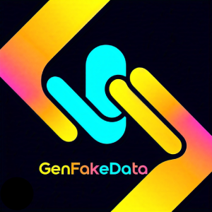
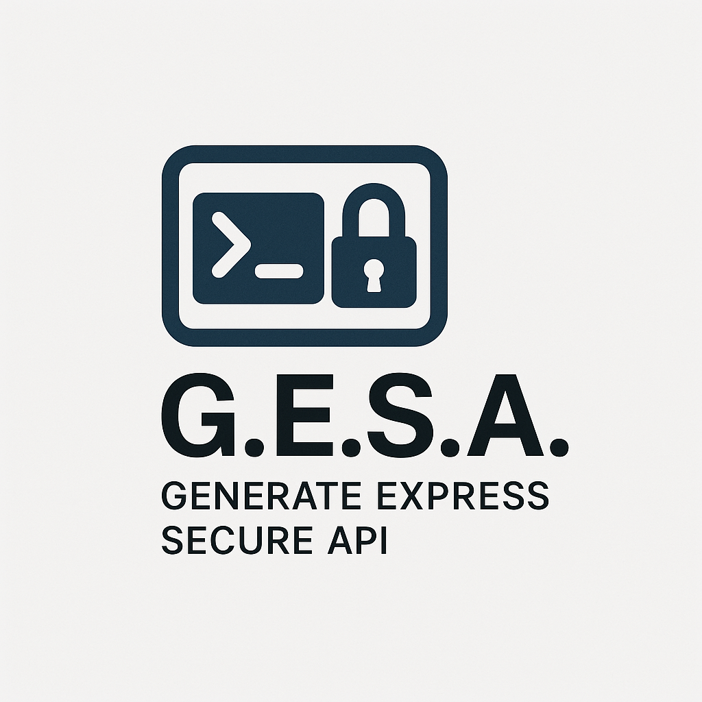

Projects

GenFakeData
A Node.js Express REST API for generating realistic fake data on demand — useful for seeding databases, testing pipelines, and prototyping frontends without relying on production data. Includes Docker support for containerized deployment and Django support.
Source on GitHub
G.E.S.A.
A CLI tool that scaffolds secure Node.js Express API projects in seconds. Supports JavaScript and TypeScript, includes Prisma ORM with SQLite, environment configuration, and a dev server out of the box.
Source on GitHubIronweek
Ironweek is a private, account-free workout tracker for your phone that keeps all your data on your device. You build workouts, assign them to days of the week, and get a daily and weekly view that marks each day as done, skipped, missed, or rest. During a workout it guides you set by set, logging reps and weight, running a rest timer, and timing the session, with optional how-to videos and skip notes. Reminders, a History tab, unit and theme settings, and a backup export round out the app.
Source on GitHub